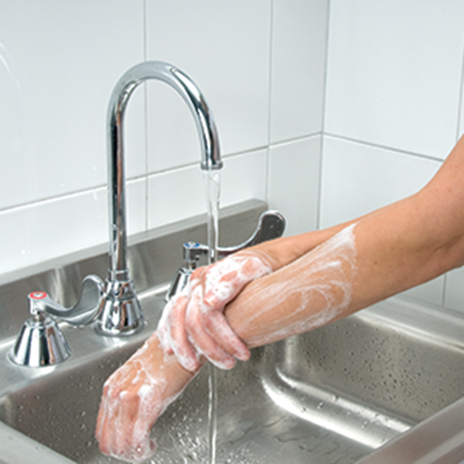
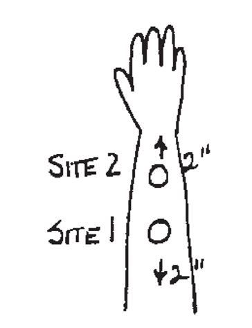
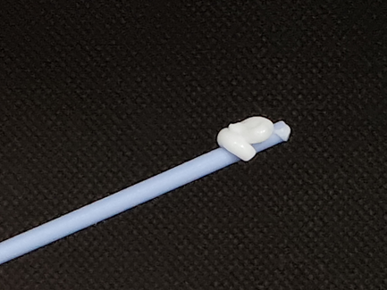
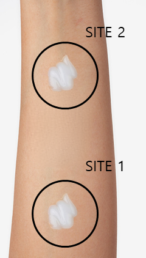

|
테스트방법




- 세안제 등으로 팔꿈치 안쪽을 깨끗하게 세척하고, 수건, 휴지 등으로 물기를 제거합니다. 5분이상 추가로 건조하여 수분이 없는 상태로 만듭니다.
- 아이브로우 펜슬 또는 수성볼펜등을 이용해서 손목과 팔꿈치 사이에 종이컵 크기의 원(직경 5cm)을 2개 그립니다. (그림의 SITE 1, SITE 2)
- 동봉된 면봉을 이용하여 시험 샘플(크림) 약 0.1mL(면봉 끝으로 약 0.5cm)을 떠서 SITE 1에 덜고, 검지를 이용해서 원을 따라서 일정한 속도로 10회 문질러줍니다. 이때 속도는 1초당 1회로 합니다.
|